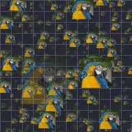

Verstrooiingsveld

Verstrooit kopieën van de laag in een oneindig 3D-veld en verbergt de oorspronkelijke laag; met keyframe-animatie beweeg je in drie dimensies door het veld.
Instellingen
| Instelling | Type | Bereik | Standaard |
|---|---|---|---|
| Positie | Punt (X, Y) | -99999 tot 99999 | 0, 0 |
| Positie Z | Getal | -99999 tot 99999 | 0 |
| Dichtheid | Getal | 0 tot 1 | 0.3 |
| Evolutie | Getal | -9999 tot 9999 | 0 |
| Seed | Getal | 0 tot 9999 | 0 |
| Schaal | Getal | 0.05 tot 20 | 1 |
| Grootte | Getal | 0 tot 10 | 0.5 |
| Hoek | Hoek | -3600° tot 3600° | 0° |
| Groottevariatie | Getal | 0% tot 100% | 50% |
| Hoekvariatie | Getal | 0% tot 100% | 0% |
| Hoeveelheid | Getal | 0 tot 40 | 15 |
| Uitfaden | Getal | 0% tot 100% | 100% |
| Alfa | Getal | 0% tot 100% | 100% |
| Speling | Getal | 0% tot 100% | 100% |
| Overvloeimodus | Keuze | Normaal, Optellen, Bleken, Vermenigvuldigen, Lichter, Donkerder, Bedekken, Verschil | Normaal |
| Inkleuring | Keuze | Geen, Willekeurig, Diepte | Geen |
| Kleur 1 | Kleur | – | #FF55AA |
| Kleur 2 | Kleur | – | #55AAFF |
| Kleur 3 | Kleur | – | #FFAA55 |
| Luminantie vergrendelen | Aan of uit | – | Aan |
| Verzadiging vergrendelen | Aan of uit | – | Uit |
| Kleurtoon interpoleren | Aan of uit | – | Uit |